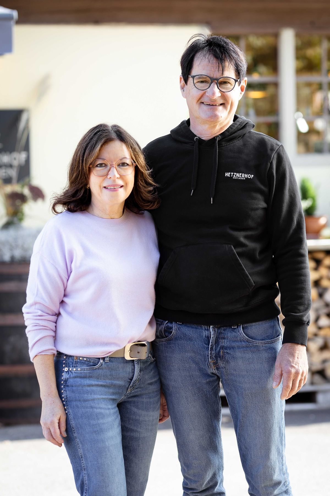
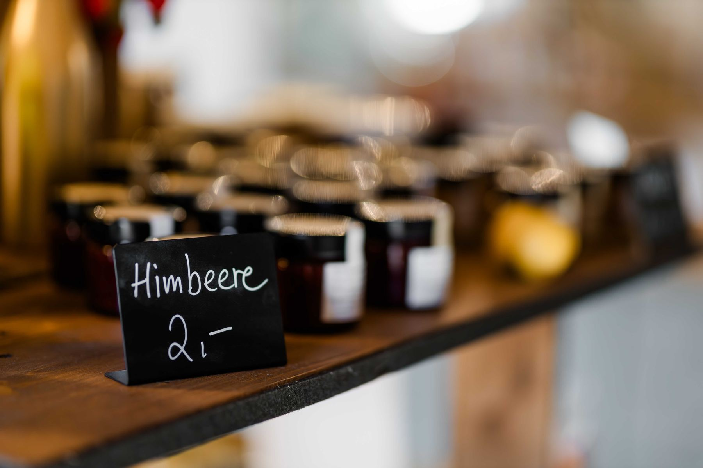
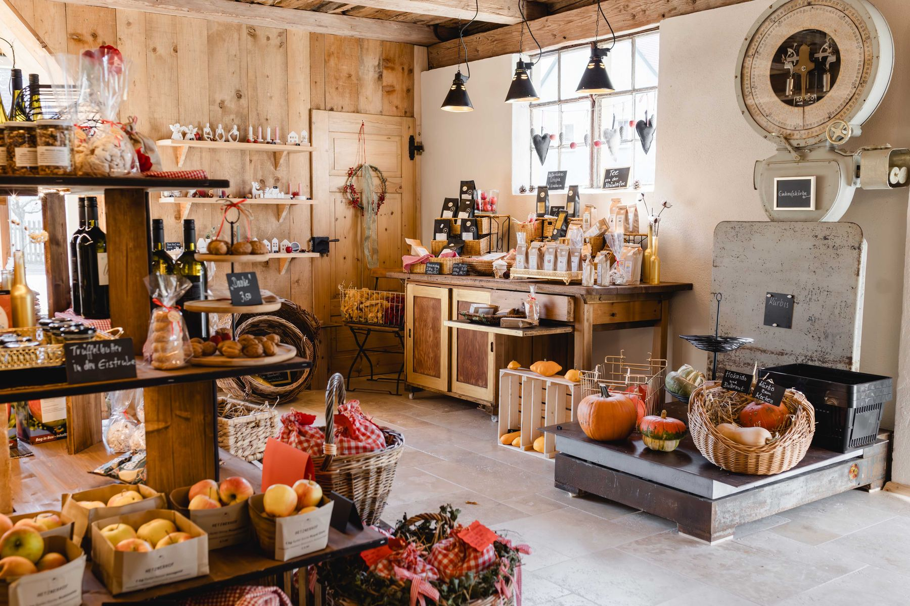
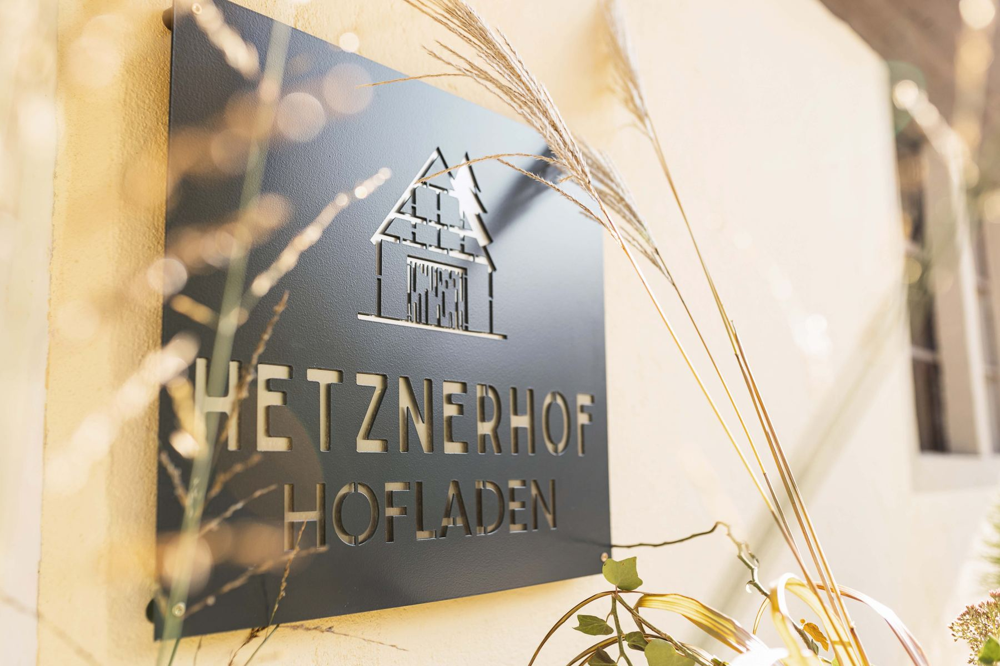
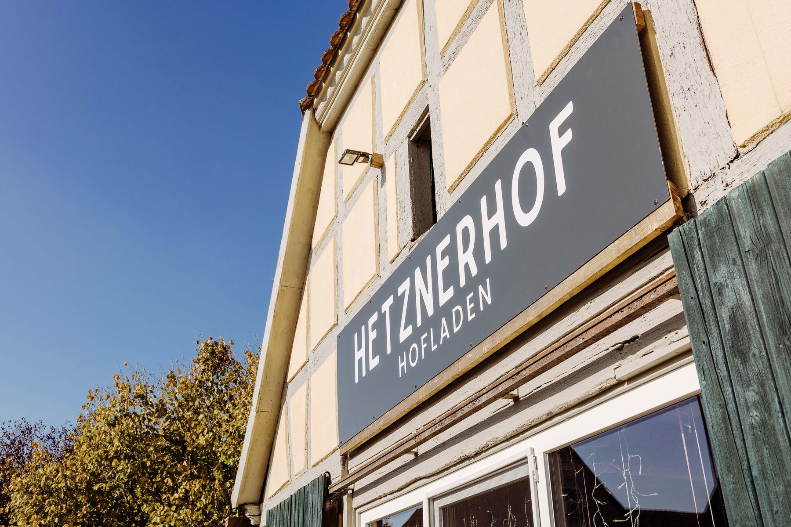
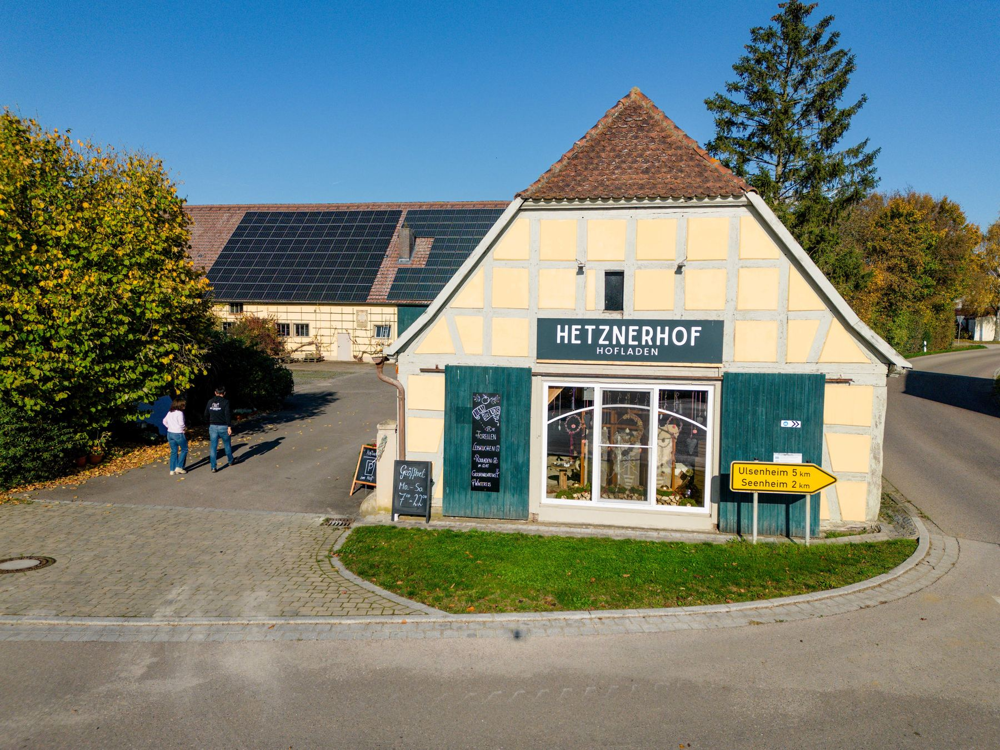

Vom eigenen Hof
Apfelsaft, hausgemachte Marmeladen und Fruchtaufstriche, Kartoffeln und Obst aus unseren Wiesen.
Was wir selbst anbauen und was wir lieben – frisch vom Hof und von befreundeten Erzeugern aus der Region.
Authentisch, ehrlich und mit Liebe gemacht: Bei uns kaufst du regional ein – direkt dort, wo vieles davon wächst.
Seit elf Generationen bewirtschaftet unsere Familie den Hof in Neuherberg, am Rand des Steigerwalds. Die Landwirtschaft ist hier nicht Kulisse, sondern Alltag – mit Feldern, Obstwiesen und einem historischen Bauernhaus aus dem 18. Jahrhundert.
Mit viel Leidenschaft haben wir unsere alte Scheune zu einem charmanten Hofladen umgebaut. Dort findest du unsere eigenen Erzeugnisse und handverlesene Produkte von Bauern und Manufakturen aus der Umgebung – nachhaltig erzeugt und mit Respekt vor der Natur.

In unserer umgebauten Scheune findest du, was Franken zu bieten hat – vom eigenen Apfelsaft bis zur Feinkost befreundeter Manufakturen.
Apfelsaft, hausgemachte Marmeladen und Fruchtaufstriche, Kartoffeln und Obst aus unseren Wiesen.

Käse, Butter und Joghurt, Eier und Eiernudeln, Honig, Wild und Fleisch von Erzeugern aus der Umgebung.

Essig und Öl, Senf und Meerrettich, Kaffee, Snacks, Spirituosen und Delikatessen – liebevoll ausgewählt.





Montag bis Sonntag
7:00 – 22:00 Uhr